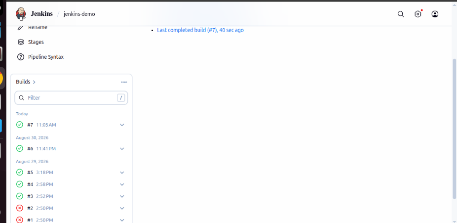
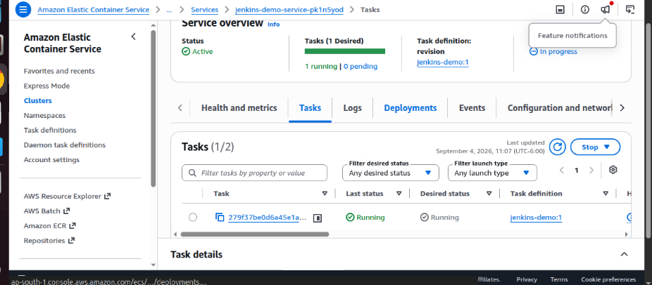
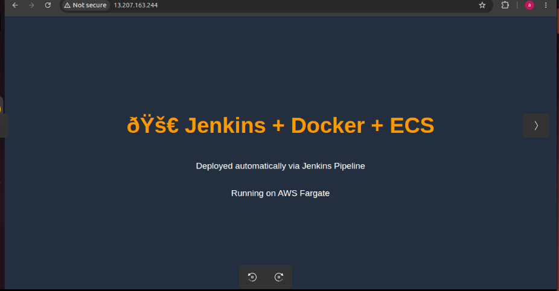

About Me
DevOps engineer building CI/CD pipelines and cloud infrastructure with Docker, Jenkins,
and AWS. Background in embedded systems and low-level programming, which carries over
into a comfort with systems-level troubleshooting and infrastructure automation.



Built an end-to-end CI/CD pipeline on a self-hosted Jenkins server: pushes to a
GitHub repo trigger a Jenkins job via a webhook (exposed locally through ngrok),
which builds a Docker image, pushes it to Amazon ECR, and deploys it to an ECS
Fargate cluster.
Technologies Used
- Jenkins
- Docker
- Amazon ECR
- Amazon ECS (Fargate)
- GitHub Webhooks
- ngrok


Developed a UART command parser on the STM32 NUCLEO-F446RE using Embedded C and
the STM32 HAL library. The firmware receives commands over USART2, parses text
commands, controls the onboard LED, echoes responses, and handles invalid input.
Technologies Used
- STM32 NUCLEO-F446RE
- Embedded C
- STM32 HAL
- USART2 (115200 baud)
- GPIO
Designed and implemented an external interrupt (EXTI) application on the STM32
NUCLEO-F446RE using Embedded C and the STM32 HAL library. Pressing the onboard
blue push button (PC13) generates a hardware interrupt handled by the NVIC,
which invokes the Interrupt Service Routine (ISR) to toggle the onboard green
LED (PA5). The project demonstrates interrupt-driven programming, GPIO
configuration, HAL callback functions, and efficient CPU utilization without
continuous polling.
Technologies Used
- STM32 NUCLEO-F446RE
- Embedded C
- STM32 HAL
- STM32CubeIDE
- STM32CubeMX
- GPIO
- EXTI
- NVIC
Concepts Demonstrated
- External Interrupts (EXTI)
- Interrupt Service Routine (ISR)
- Nested Vectored Interrupt Controller (NVIC)
- HAL Callback Functions
- Interrupt Priorities
- Context Saving and Restoring